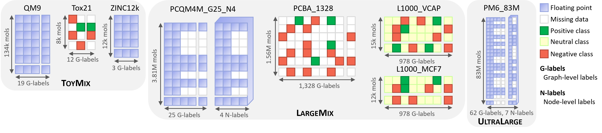

Graphium Datasets¶
Graphium datasets are hosted at on Zenodo on this link.
Instead of provinding datasets as a single entity, our aim is to provide dataset mixes containing a variety of datasets that are meant to be predicted simultaneously using multi-tasking.
They are visually described in this image, with detailed description below. 
ToyMix (QM9 + Tox21 + Zinc12K)¶
The ToyMix dataset combines the QM9, Tox21, and Zinc12K datasets. These datasets are well-known in the literature and used as toy datasets, or very simple datasets, in various contexts to enable fast iterations of models. By regrouping toy datasets from quantum ML, drug discovery, and GNN expressivity, we hope that the learned model will be representative of the model performance we can expect on the larger datasets.
Train/Validation/Test Splits¶
for all the datasets in ToyMix are split randomly with a ratio of 0.8/0.1/0.1. Random splitting is used since it is the simplest and fits the idea of having a toy dataset well.
QM9¶
is a well-known dataset in the field of 3D GNNs. It consists of 19 graph-level quantum properties associated to an energy-minimized 3D conformation of the molecules [1]. It is considered a simple dataset since all the molecules have at most 9 heavy atoms. We chose QM9 in our ToyMix since it is very similar to the larger proposed quantum datasets, PCQM4M_multitask and PM6_83M, but with smaller molecules.
Tox21¶
is a well-known dataset for researchers in machine learning for drug discovery [2]. It consists of a multi-label classification task with 12 labels, with most labels missing and a strong imbalance towards the negative class. We chose Tox21 in our ToyMix since it is very similar to the larger proposed bioassay dataset, PCBA_1328_1564k both in terms of sparsity and imbalance and to the L1000 datasets in terms of imbalance.
ZINC12k¶
is a well-known dataset for researchers in GNN expressivity [3]. We include it in our ToyMix since GNN expressivity is very important for performance on large-scale data. Hence, we hope that the performance on this task will correlate well with the performance when scaling.
LargeMix (PCQM4M + PCBA1328 + L1000)¶
In this section, we present the LargeMix dataset, comprised of four different datasets with tasks taken from quantum chemistry (PCQM4M), bio-assays (PCBA) and transcriptomics.
Train/validation/test/test_seen¶
Splits For the PCQM4M_G25_N4, we create a 0.92/0.04/0.04 split. Then, for all the other datasets in LargeMix, we first create a "test_seen" split by taking the set of molecules from L1000 and PCBA1328 that are also present in the training set of PCQM4M_G25_N4, such that we can evaluate whether having the quantum properties of a molecule helps generalize for biological properties. For the remaining parts, we split randomly with a ratio of 0.92/0.04/0.04.
L1000 VCAP and MCF7¶
The LINCS L1000 is a database of high-throughput transcriptomics that screened more than 30,000 perturbations on a set of 978 landmark genes [4] from multiple cell lines. VCAP and MCF7 are, respectively, prostate cancer and human breast cancer cell lines. In L1000, most of the perturbagens are chemical, meaning that small drug-like molecules are added to the cell lines to observe how the gene expressions change. This allows to generate biological signatures of the molecules, which are known to correlate with drug activity and side effects.
To process the data into our two datasets comprising the VCAP and MCF7 cell lines, we used their "level 5" data composed of the cleanup data converted to z-scores, and filtered to keep only chemical perturbagens. However, we were left with multiple data points per molecule since some variables could change (e.g., incubation time) and generate a new measure. Given our objective of generating a single signature per molecule, we decided to take the measurements with the strongest global activity such that the variance over the 978 genes is maximal. Then, since these signatures are generally noisy, we binned them into five classes corresponding to z-scores based on the thresholds \(\{-4, -2, 2, 4\}\).
The cell lines VCAP and MCF7 were selected since they have a higher number of unique molecule perturbagens than other cell lines. They also have a relatively lower data imbalance, with ~92% falling in the "neutral class" when the z-score was between -2 and 2.
PCBA1328¶
This dataset is very similar to the OGBG-PCBA dataset [5], but instead of being limited to 128 assays and 437k molecules, it comprises 1,328 assays and 1.56M molecules. This dataset is very interesting for pre-training molecular models since it contains information about a molecule's behavior in various settings relevant to biochemists, with evidence that it improves binding predictions. Analogous to the gene expression, we obtain a bio-assay-expression of each molecule.
To gather the data, we have looped over the PubChem index of bioassays [6] and collected every dataset such that it contains more than 6,000 molecules annotated with either Active'' orInactive'' and at least 10 of each. Then, we converted all the molecular IDs to canonical SMILES and used it to merge all of the bioassays into a single dataset.
PCQM4M_G25_N4¶
This dataset comes from the same data source as the OGBG-PCQM4M dataset, famously known for being part of the OGB large-scale challenge [7] and being one of the only graph datasets where pure Transformers have proven successful. The data source is the PubChemQC project [8] that computed DFT properties on the energy-minimized conformation of 3.8M small molecules from PubChem.
Contrarily to the OGB challenge, we aim to provide enough data for pre-training GNNs, so we do not limit ourselves to the HOMO-LUMO gap prediction [7]. Instead, we gather properties directly given by the DFT (e.g., energies) and compute other 3D descriptors from the conformation (e.g., inertia, the plane of best fit). We also gather node-level properties, the Mulliken and Lowdin charges at each atom. Furthermore, about half of the molecules have time-dependent DFT to help inform about the molecule's excited state. Looking forward, we plan on adding edge-level tasks to enable the prediction of bond properties, such as their lengths and the gradient of the charges.
UltraLarge Dataset¶
PM6_83M¶
This dataset is similar to the PCQM4M and comes from the same PubChemQC project. However, it uses the PM6 semi-empirical computation of the quantum properties, which is orders of magnitude faster than DFT computation at the expense of less accuracy [8, 9].
This dataset covers 83M unique molecules, 62 graph-level tasks, and 7 node-level tasks. To our knowledge, this is the largest dataset available for training 2D-GNNs regarding the number of unique molecules. The various tasks come from four different molecular states, namely S0'' for the ground state,T0'' for the lowest energy triplet excited state, cation'' for the positively charged state, andanion'' for the negatively charged state. In total, there are 221M PM6 computations.
References¶
[1] https://www.nature.com/articles/sdata201422/
[2] https://europepmc.org/article/MED/23603828
[3] https://arxiv.org/abs/2003.00982v3
[4] https://pubmed.ncbi.nlm.nih.gov/29195078/
[5] https://arxiv.org/abs/2005.00687
[6] https://pubmed.ncbi.nlm.nih.gov/26400175/
[7] https://arxiv.org/abs/2103.09430